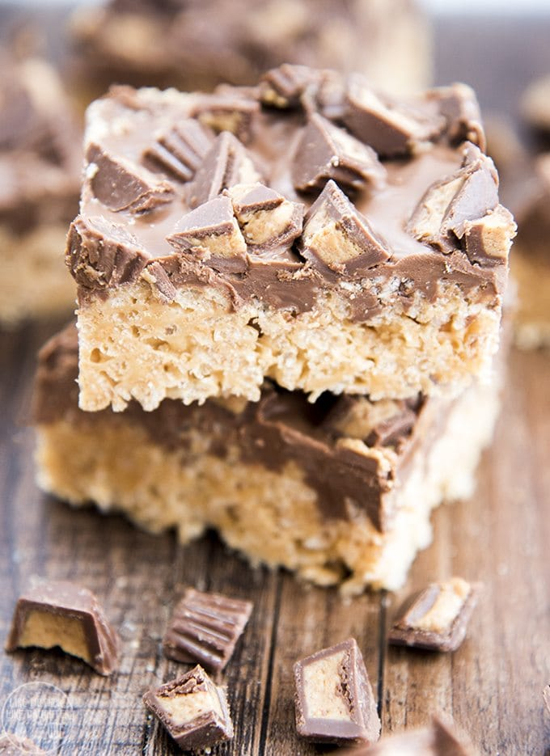

Peanut Butter Cup Rice Krispy Treats
This is a GREAT recipe that is very simple, but delicous!
This is a perfect and easy treat to make that is topped with chocolate peanut butter ganache.
Ingredients
- 2 TBS butter
- 10 oz marshmellows
- 2/3 cup creamy peanut butter(I like using Honey Roasted)
- 6 cups rice crisp cereal
Ganache Topping
- 2 cups chocolate chips
- 3/4 cup creamy peanut butter(Again, I use Honey Roasted)
- 1 1/2 cups chopped peanut butter cups(I buy the Reese's mini's unwrapped)
Instructions
- Melt butter over medium low heat in a large sauce pan.
- Add marshmallows and peanut butter stirring to ensure mixture is consistent and combined well.
- Pour crisp rice ceral while stirring together until completely coated.
- Pour mixture into 9X13 pan pressing down evenly.
For the Peanut Butter Chocolate Ganache:
- Put chocolate chips, peanut butter, and Reese's peanut butter cups in a microwavable bowl.
- Melt all together in microwave for 45 seconds, stir the mixture, then put back in microwave for another 20 seconds(mixture should be smooth after stirred).
- Pour melted chocolate ganache over rice krispy treat and spread evenly.
- Let chocolate set completely,
- Prepare to have your MIND BLOWN!
Here is the original recipe that I have tweaked to my liking
